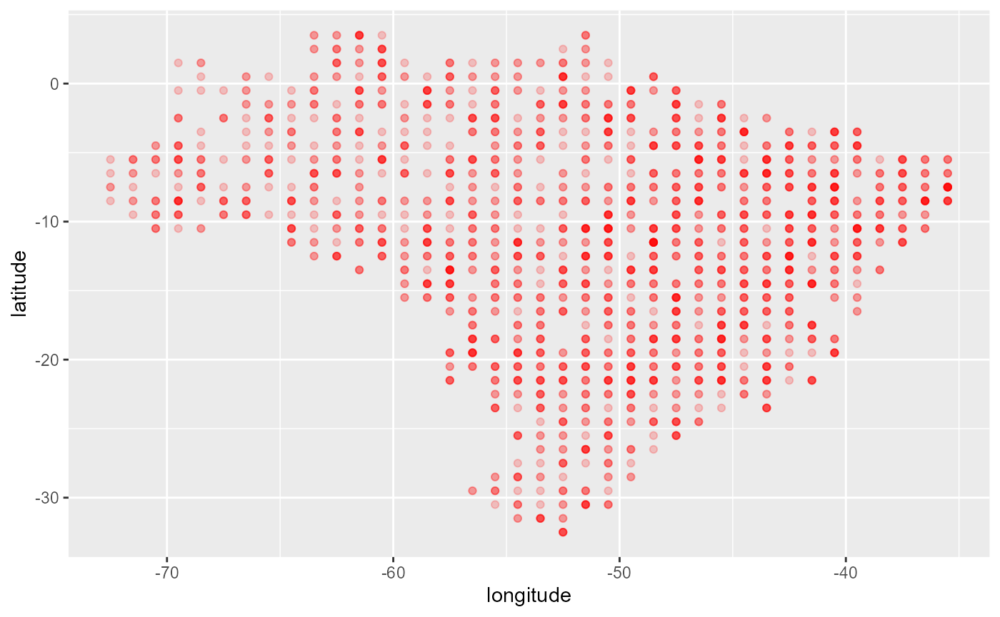

library(fco2r)
dplyr::glimpse(oco2_br)
#> Rows: 146,646
#> Columns: 11
#> $ longitude <dbl> -70.33963, -70.33963, -70.33963~
#> $ longitude_bnds <chr> "-70.4644097222:-70.21484375", ~
#> $ latitude <dbl> -5.806417, -5.557240, -5.058887~
#> $ latitude_bnds <chr> "-5.93100534001:-5.68182872924"~
#> $ time_yyyymmddhhmmss <dbl> 2.014092e+13, 2.014092e+13, 2.0~
#> $ time_bnds_yyyymmddhhmmss <chr> "20140915000000:20140916000000"~
#> $ altitude_km <dbl> 3307.8, 3307.8, 3307.8, 3307.8,~
#> $ alt_bnds_km <chr> "0.0:6615.59960938", "0.0:6615.~
#> $ fluorescence_offset_relative_771nm_idp <dbl> 0.0167236, 0.0187703, 0.0167454~
#> $ fluorescence_offset_relative_757nm_idp <dbl> 0.01495360, 0.01348060, 0.01151~
#> $ xco2_moles_mole_1 <dbl> 0.000391583, 0.000394184, 0.000~
oco2_br |>
dplyr::sample_n(2000) |>
ggplot2::ggplot(ggplot2::aes(x=longitude, y=latitude)) +
ggplot2::geom_point(color="red", alpha=0.2)